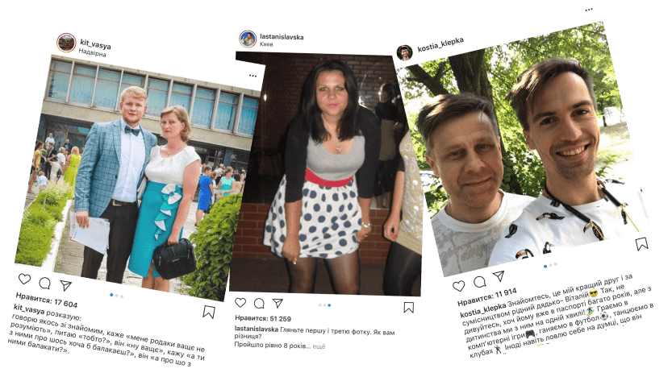

Flint
Flint-академія
У цьому кейсі є частина нашого серця, оскільки це був один із перших проєктів для бренда Flint і саме після нього почалося наша щільна співпраця.
Завдання:
тут потрібно було створити яскраву рекламну кампанію із соціальним підтекстом. Таку, щоб і сухарики захотілося купити й задуматися про щось важливе.
Завдання вийшло дуже непросте: законектити два покоління споживачів бренда. Любителі похрумтіти сухариками Flint — це дві різні вікові категорії: це може бути 15-річний підліток і 35-річний менеджер. Ми думали, що їх може об’єднувати? Яка кампанія однаково «зайде» й тим, і тим?
Ми почали з дослідження, у якому опитали підлітків і дізналися, що їх справді турбують відносини з дорослим поколінням (з батьками та вчителями).
Це й наштовхнуло нас на думку про те, що Flint може стати тим самим «конектом», який дозволить зробити життя молодого покоління простим і кайфовим. Що для цього потрібно? Просто «заговорити» однією мовою. У буквальному значенні.
Це досить глибока та масштабна соціальна проблема, тому перед нами стояла непроста мета: запакувати її в яскраву, класну та зрозумілу концепцію. Так і народилася масштабна ідея Flint-Академії. Викладачами академії став Ярмак та головний герой каналу «Чоткий Паца» Костя Клепка.
Наша Біг Айдіа звучала так: щоб траблів стало якнайменше, потрібно законектить 2 покоління — батьків/вчителів і підлітків, зробити їх ближче один до одного і вирішити всі трабли, які пов’язані з непорозумінням між ними.
Етапи
1 Насамперед ми створили сайт (https://online.flint.tm), на якому анонсували запуск академії. На ньому можна чудово провести час: пройти тест, затестити круту insta-маску і приєднатися до тікток-челенджу від Flint.
2 Другий етап — створення digital та TV роликів . Для них, разом із Ярмаком, ми написали й записали трек, під який і відбувається в роликах основна дія.
3 Підкріпити месендж «конекту поколінь» ми вирішили створенням мінішоу Flint-академії. У форматі прямих етерів топові блогери виходили на зв’язок із зірками «старшого покоління»: ставили їм запитання, обговорювали актуальні теми підліткових проблем, перевіряли знання молодіжного сленгу.
4 На підтримку Flint-академії наші блогери поділилися особистими історіями зі свого дитинства. Розповіли про те, як важко їм доводилося через непорозуміння та проблеми з батьками та вчителями, про те, як важливо знаходити з ними спільну мову та як це спрощує життя.
5 Фіналом кампанії стали нативні інтеграції до пародії на каналі-кумирі всіх українських підлітків «Чоткий Паца».
Ця рекламна кампанія і про веселощі, і про важливе. На її прикладі ми показали, що реклама може бути частиною великого соціального меседжу, який робить бренд не тільки впізнаваним, а й відповідальним щодо своєї цільової авдиторії, піклується про неї.